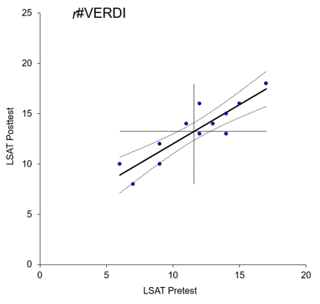

Eksempelet i Løvås (2013) dreier seg om sammenhengen mellom motorstørrelse og drivstofforbruk. Vi kan måle motorstørrelse i hestekrefter (hk) og drivstofforbruk i liter/mil.
For å vise sammenhengen kan vi sette opp ligningen \(Y_i=\alpha\:+\beta x_i+e_i\) der
\(Y=drivstofforbruket\)
\(\alpha=konstantleddet\) (krysningspunktet på y-aksen, altså Y-ver dien om x er 0)
\(\beta=linjens\:stigningstall\) (dersom x øker med 1, øker y med \(\beta\)
\(e=forstyrrelsen\) (vi antar at det er flere ting som forstyrrer forholdet mellom motorstørrelse og drivstofforbruk - drivstofforbruket er ikke bare avhengig av motorstørrelse). Vi skal snakke mye om residualer i regresjonsanalyse - residualer er dette restleddet/feilleddet/forstyrrelsen. En av forutsetningene i regresjonsanalyse er knyttet til fordelingen av disse residualene, men det kommer vi tilbake til.
Dersom vi ikke hadde hatt et feilledd kunne vi framstilt denne ligningen slik:

Når vi plotter inn et antall observasjoner av motorstørrelse og drivstofforbruk kan det se slik ut:

Det vi i en lineær regresjonsanalyse gjør er å finne den rette linja som best passer til disse observasjonene. Vi ønsker altså å finne en rett linje som best «beskriver» observasjonene. Tenk deg at vi trekker den rette linja som samlet sett ligger nærmest punktene og deretter tar bort punktene. Det vi sitter igjen med er regresjonslinja. Denne linja gir oss da “tilgang til” alle punkter som ligger på linja som en modell på sammenhengen mellom de to variablene. Selv om vi bare hadde noen observasjoner på gitte punkter på x-aksen har vi gjennom regresjonslinja fått tilgang til alle tenkelige punkter på x-linja og kan anta et drivstofforbruk ut fra det (ved å gå opp fra x-aksen, finne skjæringspunktet med regresjonslinja, og deretter gå inn på y-aksen og lese av drivstofforbruket). Den prediksjonen vi da gjør er vår beste gjetning på hvor stort drivstofforbruket vil være for en gitt motorstørrelse. Dette vil selvsagt være en kvalifisert gjetning - nettopp fordi det er en modell. Og alle modeller er feil, men noen modeller er nyttige likevel.
I eksempelet kan vi for eksempel tenke oss to mulige linjer:

Begge linjene er forsøk på å lage en rett linje som har kortest mulig avvik. Vi kan deretter legge sammen de absolutte vertikale avstandene (de stiplede linjene) fra observasjonspunktene ned til den rette linja. I prinsippet er da den rette linja som medfører minst samlet avstand fra observasjonspunktene den rette linja som best representerer observasjonspunktene, og vi kan si vi har laget en modell for sammenhengen mellom motorstørrelse og drivstofforbruk. Siden vi har en sammenhengende rett linje har vi også mulighet til å mene noe om drivstofforbruk på motorstørrelser vi ikke har målt/har observasjoner på. Vi har med andre ord en modell for å predikere drivstofforbruk ut fra motorstørrelse. Uavhengige variabler i regresjonsanalyser kalles også ofte prediktorer, fordi vi bruker de til å predikere en verdi for den avhengige variabelen.
4.1 Minste kvadratsum (Ordinary Least Squares - OLS)
Imidlertid er absoluttverdier matematisk problematiske (Løvås, 2013). Pre-datamaskiner ble det derfor utviklet en alternativ måte som kalles «minste kvadraters metode» - derav begrepet OLS («Ordinary Least Squares»). Det finnes andre måter å tilnærme seg dette, men i dette kurset går vi kun inn på OLS-regresjon.Hvis vi fortsetter eksempelet over kan vi tenke oss en mengde forslag på ulike linjer som forsøker å beskrive sammenhengen mellom de to variablene:

Man regner deretter ut kvadratene som dannes av hvert punkt og avstanden til den rette linja. Den linja som har den laveste kvadratsummen («least squares») er den linja som best representerer datapunktene og som derfor er den beste lineære modellen av forholdet mellom variablene. Regresjonslinja er således en modell. Som Thrane (2019) beskriver: den diagonale linja oppsummerer den typiske trenden i det statistiske forholdet mellom de to variablene - en linje vi kjenner som regresjonslinja. Hvis vi har et stort antall datapunkter er dette selvsagt en omfattende prosess å gjøre manuelt. Det program som jamovi gjør for oss er å regne ut kvadratsummen for et stort antall mulige linjer og deretter fortelle oss hvilken som har lavest kvadratsum.
Hvis vi tenker tilbake til formelen for modellen vår: \(Y_i=\alpha\:+\beta x_i+e_i\) kan vi nå fylle ut med verdier fra eksempelet.
Det vi egentlig har gjort når vi finner den rette linja som gir minste kvadratsum er å identifisere \(\alpha\) (skjæringspunktet på y-aksen) og \(\beta\) (stigningstallet). Statistikkprogrammer vil gi oss verdiene på dette. Vi går ikke inn på en manuell utregning her, men bruker de to verdiene Løvås (2013) viser (\(\alpha=0.211\) og \(\beta=0.00576\)). Vår modell ser da slik ut: \(Y_i=0,211\:+0,00576x_i\).
Som sagt har vi ønsket å lage en modell som predikerer drivstofforbruk ut fra motorstørrelse – eller sagt på en annen måte: hvilket drivstofforbruk kan vi forvente med en motor på 100 hk? Vi får da: \[Y_i=0,211\:+0,00576x_i=0,211\:+\:0,00576\times100\:=\:0,787\]
Dette blir vårt “best guess”, vår antakelse (vår prediksjon av verdien på y-aksen som er drivstofforbruket ut fra verdien på x-aksen som er motorstørrelse), om forventet drivstofforbruk for en motor med 100 hk basert på den modellen vi har laget om sammenhengen mellom motorstørrelse og drivstofforbruk (som er basert på de observasjonene vi har).
Vi kan naturligvis umiddelbart tenke at drivstofforbruket er avhengig av mange andre faktorer enn motorstørrelse, for eksempel bilens design (luftmotstand), vekt, rullemotstand, temperatur, type motor og så videre. Dette belyser for så vidt et sentralt problem når vi ønsker å lage modeller for prediksjon: Virkeligheten er utrolig sammensatt, mange relevante variabler er vanskelig å måle, og man ønsker en modell som er enkel nok til å kunne brukes og sammensatt nok til å gi relevante prediksjoner. Tenk for eksempel bare på «klimamodellene» som brukes for å analysere og predikere temperatur, issmelting, global oppvarming og liknende. Det er klart at i de fleste tilfeller trenger vi flere prediktorer enn en – og i regresjonssammenheng snakker vi da om multippel regresjonsanalyse. Vi kan ha som en tommelfingerregel at vi skal ha med så mange variabler at modellen har praktisk verdi, men likevel så få som mulig.
4.2 Konfidensintervall
Avslutningsvis i denne introduksjonen til regresjonsanalyse kan vi se kort på begrepet konfidensintervall (se for eksempel Løvås (2013) eller Hinkle et al. (2003)).For de som ønsker å fordype seg i effektstørrelser og konfidensintervaller anbefales Cumming & Calin-Jageman (2017) “Introduction to the new statistics: Estimation, open science, & beyond”.
Man kan si at estimatet på stigningstallet \(\beta\) er det viktigste resultatet i en regresjonsanalyse fordi dette sier noe om hvor sterk sammenhengen mellom de to variablene er. Løvås (2013) illustrerer dette slik:
De røde stiplede linjene utgjør konfidensgrensene for 95 % konfidensintervall. I grafen over har vi kun 5 observasjoner, noe som selvsagt er lite. Vi kan gå litt dypere inn i hvordan konfidensgrensene framkommer i en regresjonsanalyse.
La oss anta at vi har et datasett der vi har plottet korrelasjonen mellom en prediktor (den uavhengige variabelen) på x-aksen og en avhengig varaibel på y-aksen (se graf under). Den røde prikken markerer verdien x=8. Verdien på y-aksen (10,458) er vår prediksjon (vår buest guess) på hva verdien i den avhengige variabelen vil være ved den observerte verdien x=8.

I punktet x=8 har vi en hel populasjon av mulige normalfordelte verdier. Vårt beste estimat av gjennomsnittsverdien for denne populasjonen er 10,458. Dette er et punktestimat. Det tilhørende intervallestimatet er vårt konfidensintervall. Vi må her tenke på konfidensintervallet som en vertikal linje. Så i stedet for å tenke punkt- og intervallestimat slik

Kan vi tenke det slik:

Overført til vårt eksempel får vi:
Den røde streken er vårt 95 % konfidensintervall for punktestimatet. Hvis vi legger på 95 % konfidensintervaller på alle punktestimatene (alle punktene som utgjør regresjonslinja) kan vi lage de to stiplede linjene som toucher endepunktene på alle konfidensintervallene. Disse to stiplede linjene utgjør da konfidensgrensene for regresjonslinja.
Vi ser at konfidensgrensene er lett buede mot hverandre med minst avstand mellom dem “på midten”. Vi skal kort se på hvorfor det er slik. Vi har nå lagt på et nytt kryss i grafen under. Dette krysset markerer punktet der gjennomsnittene av X og Y krysser. Regresjonslinja må gå gjennom dette punktet, slik at alle alternative regresjonslinjer må pivotere rundt dette punktet. Dette medfører at det er litt større usikkerhet rundt punktestimatenes konfidensintervaller i endene i forhold til i midten. Konfidensintervallene for hvert enkelt punkt blir derfor litt lenger jo lenger ut fra krysningspunket vi går, og resultatet blir en form for buet linje.

4.3 Steg i analyse
Vi anbefaler at en analyse går gjennom disse stegene:
Analyse av dataene
Evtentuelt valg av prediktorer ut fra analyse av dataene
Lage modell (kjøre regresjonsanalysen)
Analyse av resultatene (diagnostikk)
Sjekk av forutsetningene
Eventuell revisjon av modellen
Eventuell analyse av revidert modell
Konklusjon / oppsummering / rapportering av resultater
Vi skal i det følgende gå gjennom disse stegene i en regresjonsanalyse.